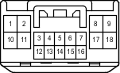

Наименование
Переключатель стеклоочистителя ветрового стекла в сборе
Код
G120
Каталожный номер
90980-12376
Цвет
Белый
Технические характеристики
Жгуты проводов для ремонта

Расположение
Расположение деталей в панели приборов (для моделей с левосторонним рулевым управлением) 3
Расположение деталей в панели приборов (для моделей с правосторонним рулевым управлением) 3
Система
Щиток приборов (для моделей с левосторонним рулевым управлением)
Щиток приборов (для моделей с правосторонним рулевым управлением)
Динамическая радарная система круиз-контроля (для моделей с 1GR-FE)
Динамическая радарная система круиз-контроля (для моделей с 1KD-FTV)
Передние стеклоочиститель и стеклоомыватель (для моделей с левосторонним рулевым управлением и автоматическими стеклоочистителями)
Передние стеклоочиститель и стеклоомыватель (для моделей с правосторонним рулевым управлением и автоматическими стеклоочистителями)
Очистители фар
Цепи электропитания
Электроприводы регулировки наклона и телескопического изменения высоты
Задние стеклоочиститель и стеклоомыватель (для моделей с левосторонним рулевым управлением)
Задние стеклоочиститель и стеклоомыватель (для моделей с правосторонним рулевым управлением)